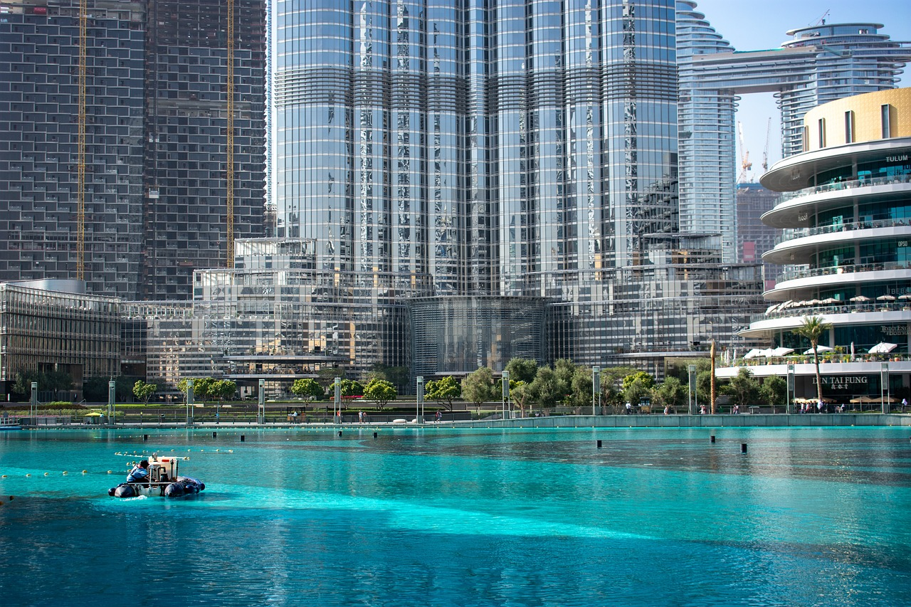

Dubai
Adéntrate en Dubái, un vibrante cruce de tradición y modernidad en el corazón del desierto, donde cada rincón ofrece lujo, cultura y una experiencia única que cautiva a todo visitante. Dubái se encuentra estratégicamente ubicado en la costa sureste del Golfo Pérsico, formando parte de los Emiratos Árabes Unidos. Esta ciudad, que alguna vez fue una pequeña aldea de pescadores, experimentó un crecimiento acelerado a partir de la década de 1960 con el descubrimiento de petróleo. La visión y la ambición de sus líderes transformaron Dubái en un impresionante centro urbano, caracterizado por su innovadora arquitectura y proyectos de desarrollo que han marcado récords mundiales, como la icónica Burj Khalifa, el edificio más alto del mundo.
En Dubái, las posibilidades para disfrutar son tan vastas como impresionantes son sus paisajes urbanos y naturales. Comenzando por sus monumentos históricos, puedes explorar el Fuerte Al Fahidi y el Museo de Dubái para sumergirte en la rica historia y cultura de la región. El distrito de Al Bastakiya ofrece una experiencia única con sus callejones estrechos y antiguas torres de viento restauradas, que transportan a los visitantes a tiempos pasados de la ciudad. Para los amantes de la naturaleza y las actividades al aire libre, el desierto circundante de Dubái es perfecto para emocionantes safaris en 4x4, sandboarding o simplemente disfrutar de la tranquilidad del paisaje desértico. El Jardín Milagro de Dubái es otro punto destacado, donde puedes maravillarte con las innovadoras exhibiciones botánicas que prosperan en medio de condiciones áridas. Para los entusiastas de las compras, Dubái es un verdadero paraíso con algunos de los centros comerciales más grandes y lujosos del mundo, como el Dubai Mall y el Mall of the Emirates. Además de las tiendas de marca y boutiques exclusivas, los zocos tradicionales ofrecen una experiencia de compra única donde puedes regatear por especias, oro, textiles y artesanías locales.

En Dubái, la moneda oficial es el Dirham de los Emiratos Árabes Unidos (AED). Para facilitar tus transacciones financieras durante tu estancia, se recomienda cambiar dinero en casas de cambio autorizadas o utilizar los numerosos cajeros automáticos disponibles en toda la ciudad. Las tarjetas de crédito son ampliamente aceptadas en hoteles, restaurantes y comercios, ofreciendo comodidad y seguridad en tus compras y pagos. Es esencial verificar los requisitos de visa antes de viajar a Dubái. Para muchos visitantes, especialmente aquellos provenientes de países elegibles, no se requiere visa previa y es posible obtenerla al llegar al aeropuerto. Sin embargo, es crucial verificar esta información con la embajada de los Emiratos Árabes Unidos o con tu agencia de viajes para asegurarte de tener la documentación adecuada antes de tu partida. Dubái cuenta con un eficiente sistema de transporte público que incluye un moderno metro que conecta las principales áreas de la ciudad. Este sistema es ideal para moverse de manera rápida y económica, evitando el tráfico en las horas pico. Además, los taxis son fácilmente accesibles y relativamente económicos, proporcionando una opción conveniente para desplazarse entre atracciones y destinos. Para aquellos que prefieren mayor flexibilidad, también es posible alquilar un coche y explorar la ciudad y sus alrededores a su propio ritmo. En cuanto a la seguridad, Dubái es reconocida por ser una de las ciudades más seguras del mundo, con un entorno generalmente pacífico y bajos índices de criminalidad. Las autoridades locales están comprometidas con garantizar la seguridad de residentes y visitantes, ofreciendo un ambiente tranquilo y acogedor. Como en cualquier destino turístico, se recomienda tomar precauciones básicas, como cuidar tus pertenencias personales y estar atento a tu entorno, para disfrutar al máximo de tu experiencia en Dubái con tranquilidad y confianza.